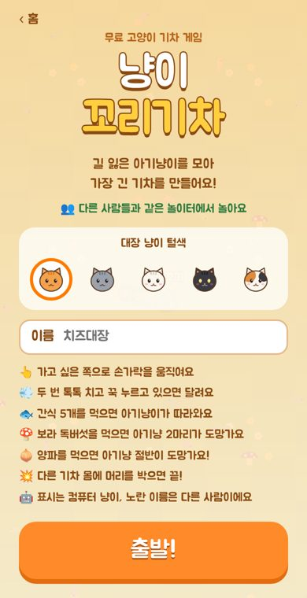
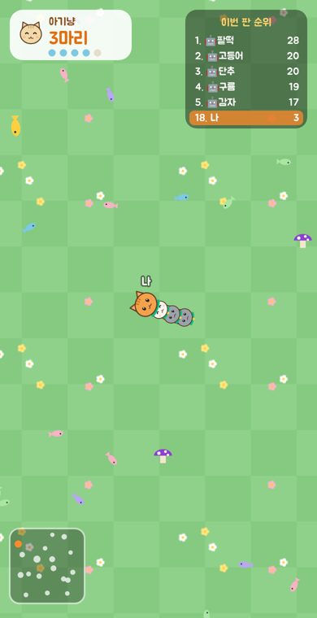

냥이 꼬리기차
냥이 꼬리기차

아기냥이를 모아
가장 긴 기차를 만들어요
대장 냥이가 놀이터를 돌아다니며 길 잃은 아기냥이를 데려오는 무료 고양이 게임이에요. 설치도 회원가입도 없이, 휴대폰이나 PC 브라우저에서 바로 시작해요.
🐾 지금 바로 놀기무료 · 설치 없음 · 휴대폰/PC 모두 가능
💻 PC에서 하면 놀이터가 더 넓게 보여서 훨씬 재밌어요!


어떤 게임인가요?
넓은 풀밭 놀이터에 길 잃은 아기냥이와 생선 간식이 흩어져 있어요. 내 대장 냥이를 움직여 간식을 먹고 아기냥이를 데려오면, 아기냥이들이 대장 뒤에 한 줄로 붙어 따라오며 기차가 점점 길어져요.
놀이터에는 다른 사람과 컴퓨터 냥이의 기차도 함께 달리고 있어요. 다른 기차의 몸에 머리를 박으면 내 기차가 흩어지고, 흩어진 아기냥이는 누구나 데려갈 수 있어요. 반대로 다른 기차가 내 몸에 부딪히면 그 아기냥이들을 내가 데려올 기회가 생겨요. 잘 피하고, 잘 감싸고, 가장 긴 기차를 만드는 사람이 이번 판 1등이에요.
이런 점이 재미있어요
- 👥같은 놀이터에서 함께접속한 사람들이 한 놀이터에서 만나요. 사람이 적을 때는 컴퓨터 냥이들이 빈자리를 채워 언제 들어와도 북적여요.
- 🍄먹으면 안 되는 것도 있어요보라 독버섯을 먹으면 아기냥 두 마리가 도망가고, 굴러다니는 양파를 먹으면 기차의 절반이 흩어져요. 아무거나 먹으면 손해예요.
- 💨달리기로 역전꾹 누르면 잠깐 빨라져요. 다른 기차 앞을 가로막거나 위험에서 빠져나올 때 써 보세요.
- 🎀목걸이로 내 기차 구분아기냥이는 자기 대장과 같은 색 목걸이를 차요. 기차끼리 엉켜도 누구 기차인지 한눈에 보여요.
- 🎅모자·털색·꼬리 장식 꾸미기산타 모자, 선비 갓, 솜브레로 같은 모자와 반짝이 전구, 색동 띠 같은 꼬리 장식으로 내 기차를 꾸며요. 같이 하는 사람들에게도 그대로 보여요.
- ⏱️한 판 3~10분잠깐 쉴 때 한 판, 기록을 깨고 싶을 때 한 판. 내 최고 기록은 이 기기에 저장돼요.
간단한 조작법
| 휴대폰 | 가고 싶은 쪽으로 손가락을 움직여요. 두 번 톡톡 치고 꾹 누르고 있으면 달려요. |
|---|---|
| PC | 마우스를 가고 싶은 쪽에 두면 따라가요. 클릭하고 있거나 스페이스바를 누르면 달려요. |
휴대폰으로도 충분히 즐길 수 있지만, PC에서 하면 화면이 넓어 다른 기차와 아기냥이를 더 멀리까지 볼 수 있어서 훨씬 재밌어요.
더 자세한 규칙과 오래 살아남는 요령은 플레이 방법에 정리해 두었어요.
자주 묻는 질문
돈이 드나요?
아니요. 게임은 모두 무료예요. 사이트 운영을 위해 광고가 붙을 수 있어요. 원하는 사람만 짧은 광고를 한 번 보고 꾸미기를 마음껏 고를 수 있고, 꾸미기는 모양만 바뀌고 실력에는 영향이 없어요.
회원가입이 필요한가요?
필요 없어요. 이름은 게임 안에서 보일 별명만 적으면 되고, 비워 두어도 돼요. 최고 기록과 고른 털색은 이 기기의 브라우저에만 저장돼요.
다른 사람이 안 보여요.
같은 시간에 접속한 사람이 없거나, 서버가 잠깐 쉬고 있으면 컴퓨터 냥이들과 놀게 돼요. 이름 앞에 🤖가 붙은 기차가 컴퓨터 냥이, 노란 이름이 다른 사람이에요. 서버가 처음 깨어날 때는 몇 초 걸릴 수 있어요.
렉이 걸려요.
서버는 한국과 가까운 도쿄에 있어요. 와이파이가 약하거나 데이터가 느릴 때 기차가 끊겨 보일 수 있어요. 다른 탭과 앱을 닫고 다시 들어와 보세요.